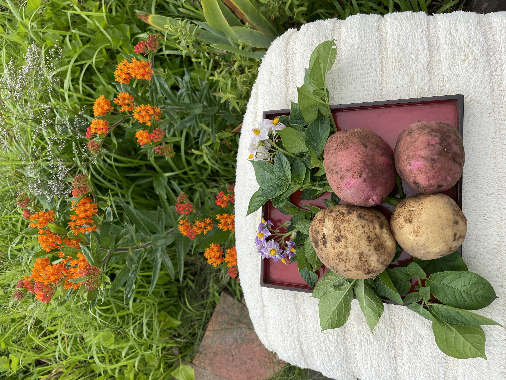

ジャガイモ
ジャガイモは、世界中で広く栽培されている人気の野菜です。当店のジャガイモは新鮮で美味しい品質を提供しています。さまざまな料理に利用できる汎用性の高い野菜であり、ポテトサラダやフライドポテトなどの人気メニューに欠かせません。
特性
- 多くの料理に利用可能
- バランスの良い栄養素（ビタミンC、カリウムなど）
- 保存性に優れる
野菜の苗植え・収穫時期
ジャガイモの苗植えは春に行われます。収穫時期は苗植えから約2〜4か月後の夏から秋にかけてです。土壌や栽培方法によっても収穫時期は異なる場合がありますので、詳細な時期は専門の農業資料などをご参考にしてください。
ジャガイモの写真

採れた日付: 2023年7月1日

畑の日付: 2023年6月2日

畑の日付: 2023年6月2日